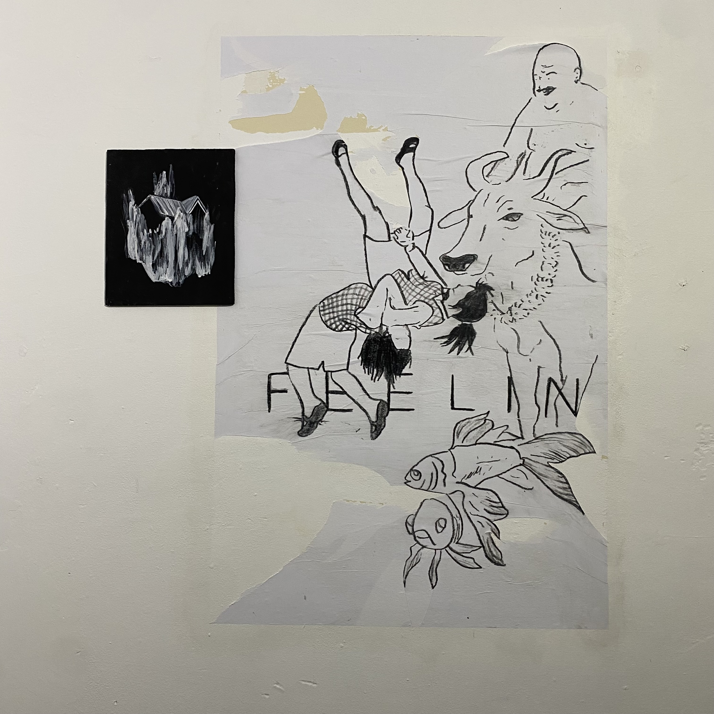
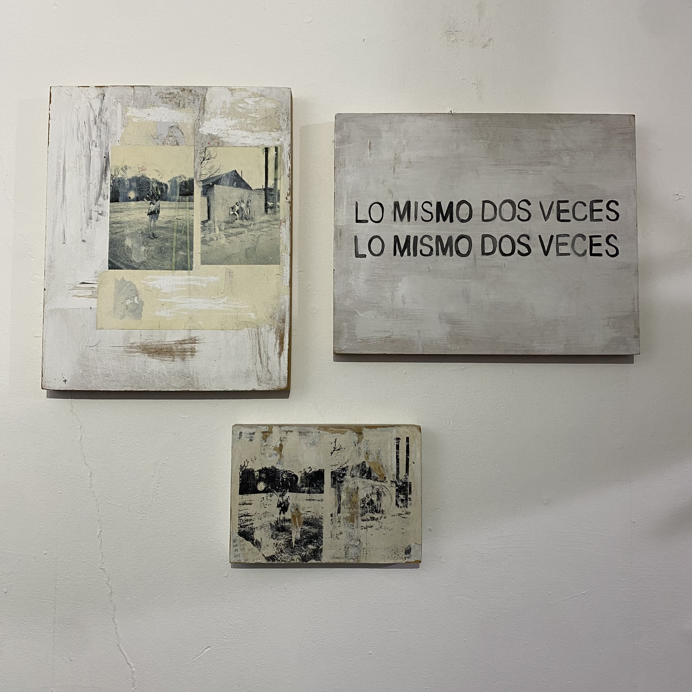
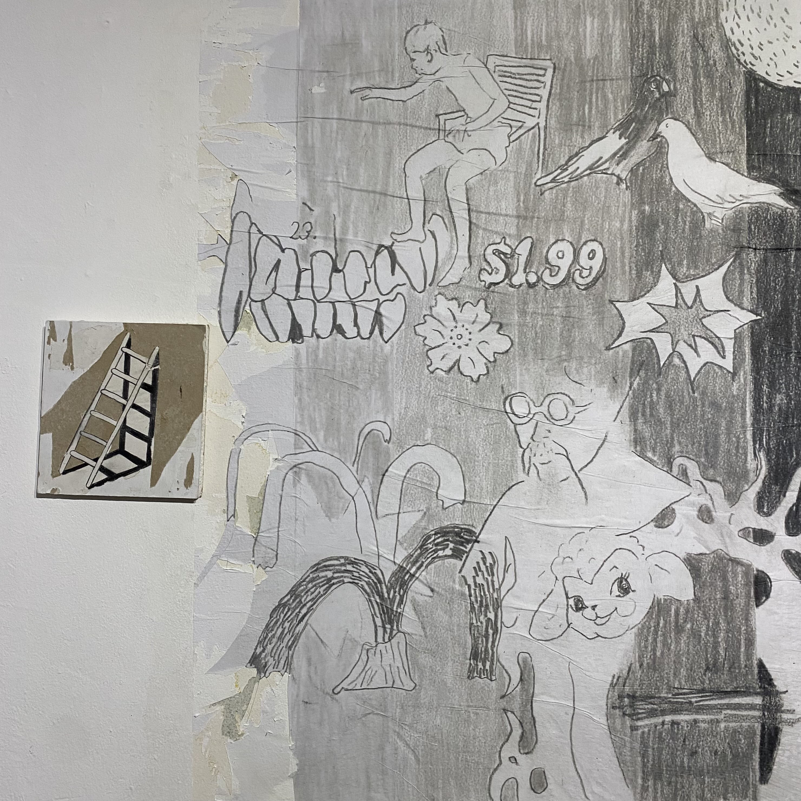
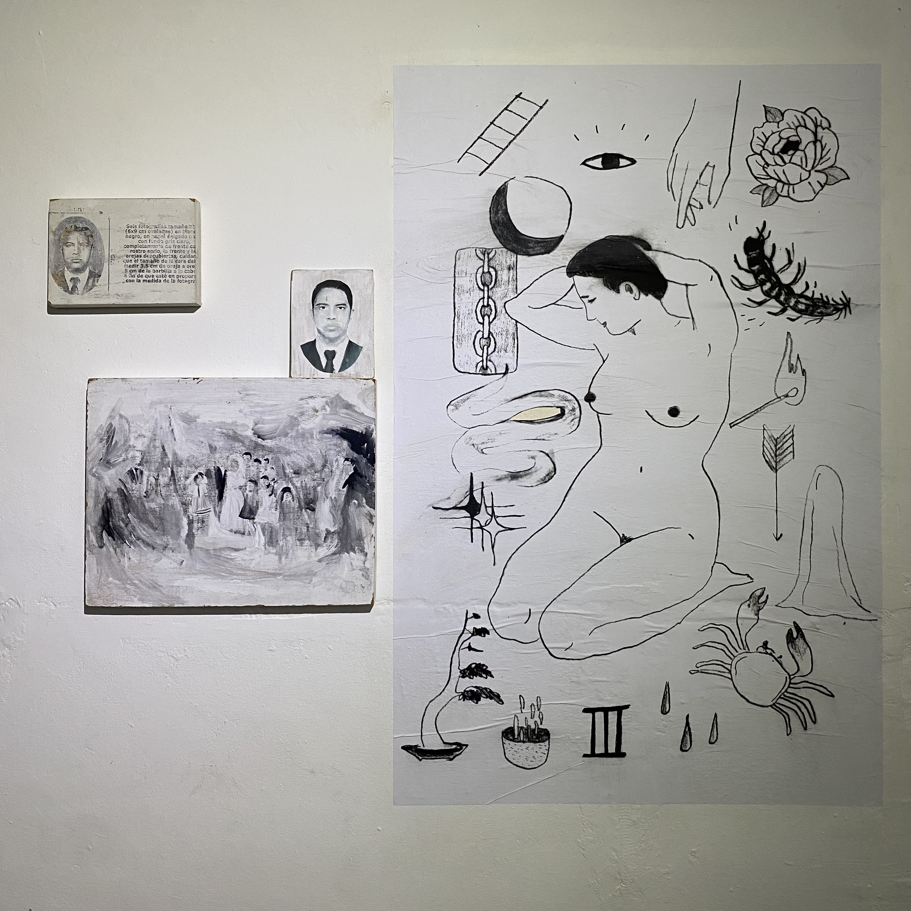

¿Qué es la memoria, si no una reconstrucción borrosa y selectiva de lo que decidimos no olvidar?
Una huella difusa y fragmentada que se vuelve a habitar cuando se nombra.
El recuerdo se vale de la ficción, siempre muta y se transforma, el pasado no permanece intacto, se deteriora, se borra.
Diluida reminiscencia que evoca un tiempo que en el pasado fue presente y hoy recuerdo, del que ya no me acuerdo.



